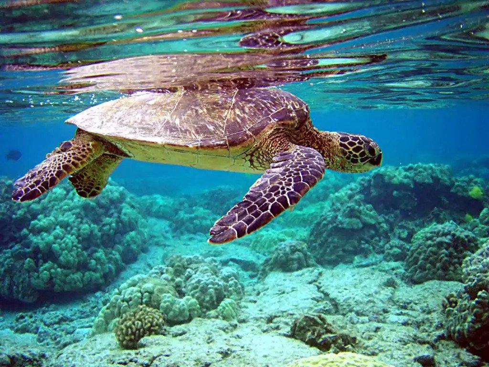
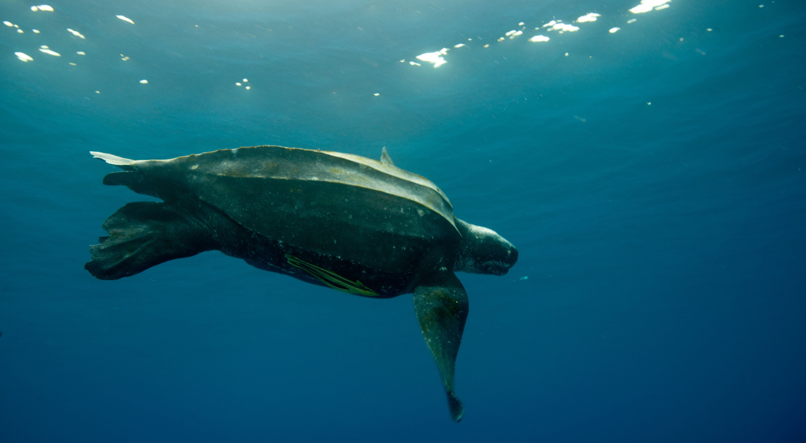
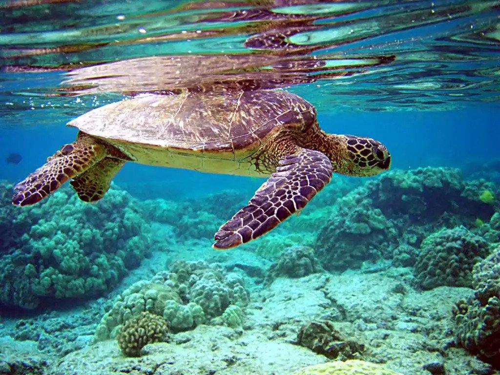
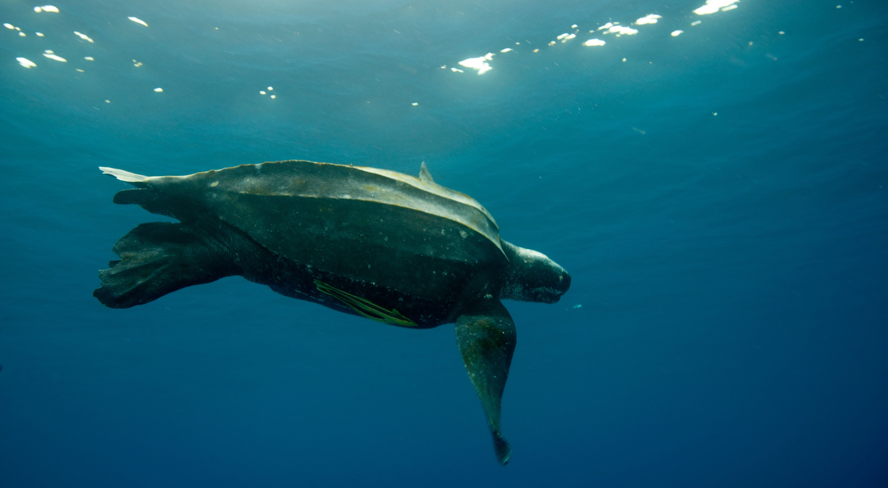

| Name of the turtle | Also Known as | Image |
|---|---|---|
| Sea turtle | Marine turtles |  |
| Leatherback sea turtle | lute turtle or leathery turtle |  |
| Olive ridley sea turtle | Lepidochelys olivacea |  |
Sea turtles (superfamily Chelonioidea), sometimes called marine turtles,are reptiles of the order Testudines and of the suborder Cryptodira. The seven existing species of sea turtles are the flatback, green, hawksbill, leatherback, loggerhead, Kemp's ridley, and olive ridley sea turtles.All of the seven species listed above, except for the flatback, are present in US waters, and are listed as endangered and/or threatened under the Endangered Species Act.The flatback itself exists in the waters of Australia, Papua New Guinea and Indonesia.Sea turtles can be categorized as hard-shelled (cheloniid) or leathery-shelled (dermochelyid).The only dermochelyid species of sea turtle is the leatherback.
he leatherback sea turtle (Dermochelys coriacea), sometimes called the lute turtle or leathery turtle or simply the luth, is the largest of all living turtles and the heaviest non-crocodilian reptile, reaching lengths of up to 1.8 metres (5 ft 11 in) and weights of 500 kilograms (1,100 lb).It is the only living species in the genus Dermochelys and family Dermochelyidae. It can easily be differentiated from other modern sea turtles by its lack of a bony shell; instead, its carapace is covered by oily flesh and flexible, leather-like skin, for which it is named.
The olive ridley sea turtle (Lepidochelys olivacea), also known commonly as the Pacific ridley sea turtle, is a species of turtle in the family Cheloniidae. The species is the second-smallest and most abundant of all sea turtles found in the world. L. olivacea is found in warm and tropical waters, primarily in the Pacific and Indian Oceans, but also in the warm waters of the Atlantic Ocean.
| Name of the turtle | Also Known as | Image |
|---|---|---|
| Sea turtle | Marine turtles |  |
| Leatherback sea turtle | lute turtle or leathery turtle |  |
| Olive ridley sea turtle | Lepidochelys olivacea | |